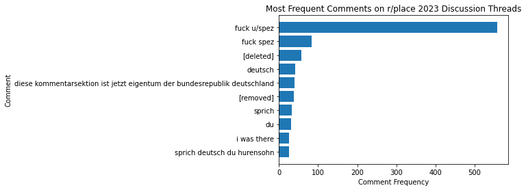

A DAY THAT WILL LIVE IN INFAMY
On August 7, 2022 -- a day that will live in infamy -- Deep State Majority Leader Chuck Schumer (D-emon)
and Traitor Joe Manchin (D-Worst Virginia) backstabbed our nation by passing the Inflation Reduction Act
through the United States Senate. With this pivotal moment, JOE BIDEN was allowed free reign to destroy
our economy, and the cheers of WOKE CLIMATE HIPPIES accompanied him as inflation continued wreaking havoc
on our lives.

GLOBAL WARMING ISN'T REAL
I am a college student at Duke University, and I was DISGUSTED to hear praises from my WOKE PROGRESSIVE CLASSMATES
marveling at how this act would fight climate change. How many ads and posters have you seen featuring wildfires
or polar bears on thin ice? TOO MANY! These cliches have been going on for SEVERAL DECADES, and the NATIONAL DEBT
has only gone UP. I'll make this clear. Climate change is NOT REAL and RENEWABLE ENERGY PROJECTS are a code word
for ECONOMIC DESTRUCTION. We, as patriotic Americans, need to fight back and TRIGGER these liberals, and here's
a guide for HELPING, not STOPPING, global warming.

STEP 1: VOTE FOR TRUE AMERICAN PATRIOTS
LIBERALS HATE COAL AND OIL. We need to VOTE in midterms and presidential races for proud, conservative candidates,
like the HONORABLE Kevin McCarthy (R-CA). Critics will say that in 2022, he was paid $655,339 by the oil and gas
industry according to OpenSecrets. Therefore, he was the second highest paid out of ALL U.S. politicians in this
category that year, but you should ignore that. Kevin McCarthy is a TRUE PATRIOT, and is NOT SUSCEPTIBLE to
corruption, unlike Nancy Pelosi (D-ISGUSTING). SO VOTE FOR FOSSIL FUEL PATRIOTS IN 2024!
Tracking Public Opinion on r/place 2023
The purpose of this project is to determine whether the Reddit community viewed r/place 2023
as generally positive, mixed, or generally negative. Was the critical backlash from a vocal
minority or did this sentiment reflect the greater community?
On official posts made by the Reddit admin u/reddit_irl during r/place 2023, I used a
web scraper to collect 8573 comments. However, since Reddit uses rate limiting to
discourage web scraping, there were some modifications made to collect these comments.
Instead of using requests and BeautifulSoup to scrape comments from a URL, I
pre-downloaded .html files of the posts, and extracted the comments from these
files. However, the caveat to this approach is that .html file downloads from
Reddit pages can only save up to 500 comments, which was a concern as many
threads had thousands of comments.
As a compromise, the .html files store the "Top" 500 comments, which sorts
comments based on how much they were upvote count, which is the Reddit
equivalent of the like count. The CSV file containing all comments can be
found on my Github page.


Analyzing the Comments
Prior to loading the sentiment analysis model, I extracted the ten most popular comments
from the official r/place 2023 discussion boards. From the bar chart, we can determine
that many users dislike Steve Huffman -- better known as his username u/spez on Reddit --
with the numerous "F*** u/spez" and "F*** spez" comments. Also, since half of the ten
most popular comments are in German, we can find that r/place has a massive
German userbase.
For this project, I used the bertweet-base-sentiment-analysis model to classify comments
as positive, neutral, or negative. The model reported that an astounding 47.4% of the
comments are neutral, while 40.5% of the comments are negative! In contrast, only
12.1% of the comments are positive. This suggests that the general sentiment of the
r/place 2023 was generally negative!
To better gauge sentiment on r/place 2023, I plan on separating English and German comments,
and letting a German-based NLP model evaluate the German comments. The sentiment analysis
model generally labeled German comments as neutral, and utilizing this approach can
lead to more accuract results.
Source Code
All the code used for this project can be found on my Github page!